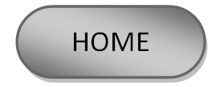
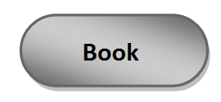
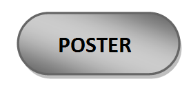
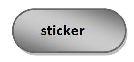

|  |  |  |  |
coper is copy print website where customers can sign up and browse the services offers by the web. The customers can narrow down their search by choosing what they need exactly, Like the paper sizes whither it’s A4,3,2… etc. , paper types like paper or cardboards, matte, glossy. The web will offers other services like printing posters, stickers, merchandise, books laminate…etc. Customers can also chose the print quality/ pixels. The website will start with the sign in/up page after that the customer can log into the services page which categorize the services for the customers including prices, pictures, short description for each service and the grab and go section, where customers can upload their materials and pay online. So, they can print in advance to cutdown the waiting time. The benefits of this website is to show the customers the prices of each service they want, which make it easier for them to compare and define their needs, having an account where customers can see their history records which make it easier to reprint same material without the need to re-upload them, linked their preferred payment methods for fast process and can collect curtain amount of points to use as a discount in the future orders, and the grab and go service as mentioned before.